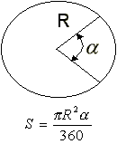

Actividad: Tarea sobre funciones y procedimientos: Estatutos de repetición.
info_outline Actividad: Tarea sobre funciones y procedimientos: Estatutos de repetición.
Desarrollarás la solución de algunos problemas.
group Modalidad
Individual
check Objetivos de aprendizaje
- Aplicar los conceptos de función y procedimiento, variable global y local.
- Reconocer la importancia del uso de funciones y procedimiento para el diseño de un programa en C.
list Instrucciones
- Desarrolla el algoritmo e impleméntalo en un programa en Python para cada uno de los ejercicios que se presentan a continuación.
- Entrega, en la sección de "Envío de Tareas", los archivos que contengan los programas en C. Es importante que al inicio de cada archivo coloques el o los algoritmos que utilizaste
- La actividad será evaluada usando la siguiente rubrica.
-
Problemas:
Utiliza el siguiente esquema como apoyo para desarrollar tus soluciones:

-
Ejercicio 1
Desarrolla un programa en C, que incluya las siguientes funciones:
La función kilómetros_millas que convierta la cantidad dada en kilómetros a millas. Equivalencia 1 milla = 1.6 km. El encabezado de la función, podría ser el siguiente:>
float kilómetros_millas (float km)
{
}La función millas_kilómetros que convierta la cantidad dada en millas a kilómetros. El encabezado de la función, podría ser el siguiente:
float millas_kilómetros (float millas)
{
}La función kilos_libras que convierta la cantidad dada en kilos a libras. Equivalencia 1 kg. = 2.2 lb. El encabezado de la función, podría ser el siguiente:
float kilos_libras (float kilos)
{
}La función libras_kilos que convierta la cantidad dada en libras a kilos. El encabezado de la función, podría ser el siguiente:
float libras_kilos (float libras)
{
}El procedimiento conversión, que despliegue el siguiente menú en pantalla:
CONVERSIÓN DE UNIDADES
A. kilómetros a millas
B. millas a kilómetros
C. kilos a libras
D. libras a kilos
S. Salir
Opción?En el
main()construye un programa que utilice el procedimiento conversión para desplegar el menú correspondiente y de acuerdo a la opción seleccionada por el usuario utiliza la función apropiada de las implementadas anteriormente, para calcular la equivalencias de las unidades de longitud. Recuerda que la captura de datos y validación de valores debe ser realizada en elmain(), pues las funciones NO pueden realizar las tareas de validación o captura de datos.Nota que las opciones del menú son alfabéticas y el usuario podrá seleccionar la opción del menú presionando la letra mayúscula o minúscula correspondiente.
Incluye el algoritmo como comentario al inicio del programa.
-
Ejercicio 2
Desarrolla un programa en C, que incluya las funciones para calcular la superficie de cada una de las siguientes figuras:
Sector

El encabezado de la función, podría ser el siguiente:
float sector(float radio, float angulo)
{
}Elipse

El encabezado de la función, podría ser el siguiente:
float elipse(float a, float b)
{
}Cono recto

El encabezado de la función, podría ser el siguiente:
float cono_recto(float a, float h)
{
}El procedimiento superficies, que despliegue el siguiente menú en pantalla:
SUPERFICIES PLANAS
1. Sector
2. Elipse
3. Cono recto
4. Salir
Opción?En el
main()construye un programa que utilice el procedimiento superficies para desplegar el menú correspondiente y de acuerdo a la opción seleccionada por el usuario utiliza la función apropiada de las implementadas anteriormente, para calcular la equivalencias de las unidades de longitud. Recuerda que la captura de datos y validación de valores debe ser realizada en elmain(), pues las funciones NO pueden realizar las tareas de validación o captura de datos.Declara PI = 3.141592 como constante global.
Nota que las opciones del menú son alfabéticas y el usuario podrá seleccionar la opción del menú presionando la letra mayúscula o minúscula correspondiente.
Incluye el algoritmo como comentario al inicio del programa.
offline_pin Especificaciones de entrega
Los archivos deberán ser entregados a través de la sección de "Envío de Tareas" de Blackboard.